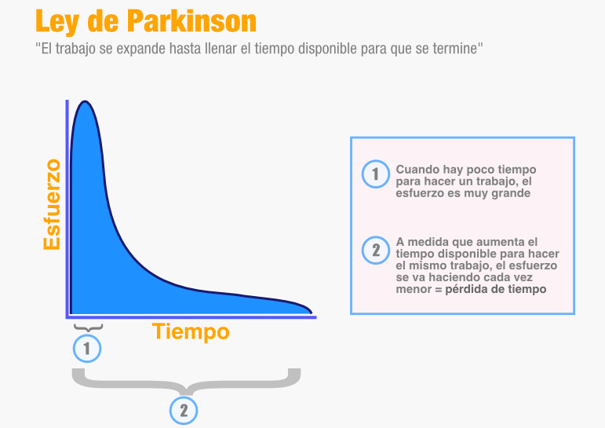

Ley de Parkinson
La Ley de Parkinson es un principio relacionado con la gestión del tiempo y la productividad. Indica que el trabajo tiende a expandirse hasta ocupar todo el tiempo disponible para realizarlo.
Autor
La ley fue formulada por Cyril Northcote Parkinson, un historiador y escritor británico. Parkinson publicó sus ideas sobre esta ley en 1955, a partir de sus observaciones sobre el funcionamiento de las organizaciones.
La idea principal es que una tarea puede acabar ocupando mucho más tiempo del que realmente necesita cuando tenemos un plazo amplio para realizarla.
Explicacion y Ejemplo
La idea principal es que una tarea puede acabar ocupando mucho más tiempo del que realmente necesita cuando tenemos un plazo amplio para realizarla.
Por ejemplo, si tenemos que realizar un trabajo y nos dan una semana para hacerlo, podemos acabar utilizando prácticamente toda la semana, aunque el trabajo realmente pueda realizarse en dos o tres días.
Una tarea
Imaginemos que tenemos que realizar una presentación.
Tiempo necesario: 2 días
Tiempo disponible: 7 días
Al tener siete días disponibles, podemos terminar utilizando prácticamente todo ese tiempo aunque la tarea pueda hacerse en solamente dos días.
La Ley de Parkinson en el desarrollo de software
Esta ley también puede aplicarse al desarrollo de programas y proyectos informáticos.
Por ejemplo, si un programador tiene una semana para realizar una función sencilla, puede dedicar ese tiempo a modificar detalles, reorganizar el código o añadir mejoras que inicialmente no eran necesarias.
En cambio, si dispone de un plazo más ajustado, tendrá que organizar mejor su tiempo y centrarse en las tareas realmente importantes.

¿Cómo podemos evitarla?
- Establecer plazos realistas.
- Dividir los trabajos grandes en tareas pequeñas.
- Priorizar las tareas más importantes.
- Evitar dedicar demasiado tiempo a detalles poco importantes.
- Establecer objetivos concretos para cada tarea.